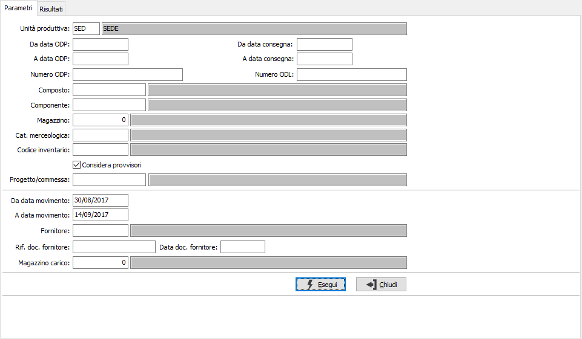
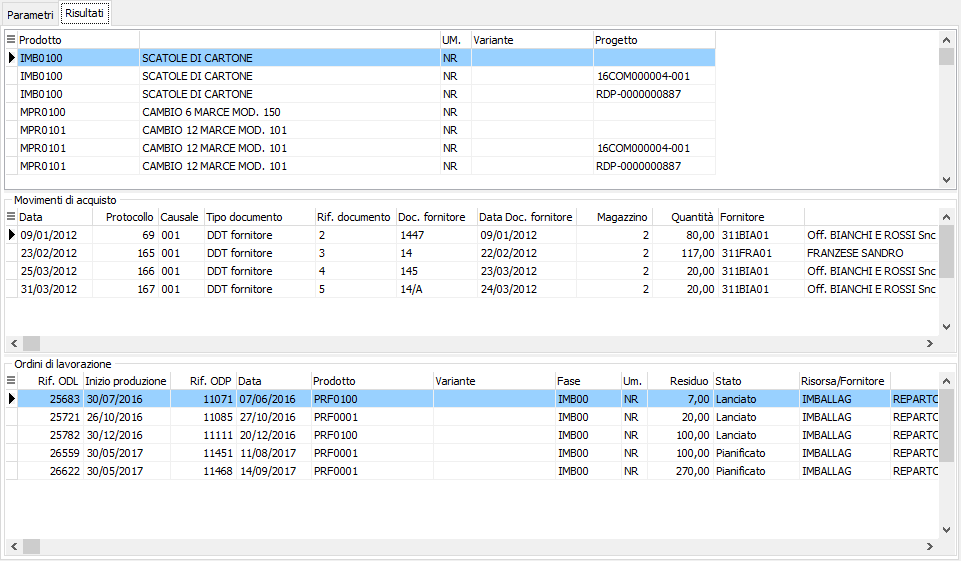

Analisi acquisti componenti
Il programma consente di elencare per uno o più componenti i carichi di magazzino registrati e gli ODL in cui il componente è utilizzato (al fine di indirizzare i componenti in ingresso ai magazzini di risorsa che gli stanno attendendo).

Nei parametri di selezione si distinguono due aree di parametri; la prima è relativa alla ricerca dei componenti tramite gli ODP/ODL ed è necessario impostare l'unità produttiva, che se unica e configurata sarà proposta in automatico, è possibile impostare il singolo composto per cui analizzare i componenti o ricercarlo per ODP, ODL, categoria merceologica o codice inventario, oppure impostare direttamente il singolo componente, è possibile specificare un singolo magazzino e se considerare i progressivi provvisori risultato della generazione del piano di produzione; se attiva la gestione progetti potrà essere specificato un singolo progetto. La seconda area di parametri è relativa ai filtri per la ricerca dei movimenti di magazzino: è possibile specificare un periodo di analisi (viene proposto un periodo relativo agli ultimi 15 giorni dalla data di sistema), un fornitore un singolo documento, una data relativa ai documenti fornitori oppure un magazzino di carico.

Una volta impostati i criteri di selezione viene presentato nella griglia superiore l’elenco dei componenti, suddivisi per progetto se gestito: per ognuno vengono visualizzati nella griglia centrale i movimenti di carico trovati in relazione ai parametri inseriti, con il doppio clic del mouse si accede direttamente al movimento di magazzino; nella griglia finale gli ODL relativi ai composti che necessitano del componente selezionato.
Dalla pagina Risultati, tramite i pulsanti presenti nella Toolbar sarà possibile effettuare la stampa.